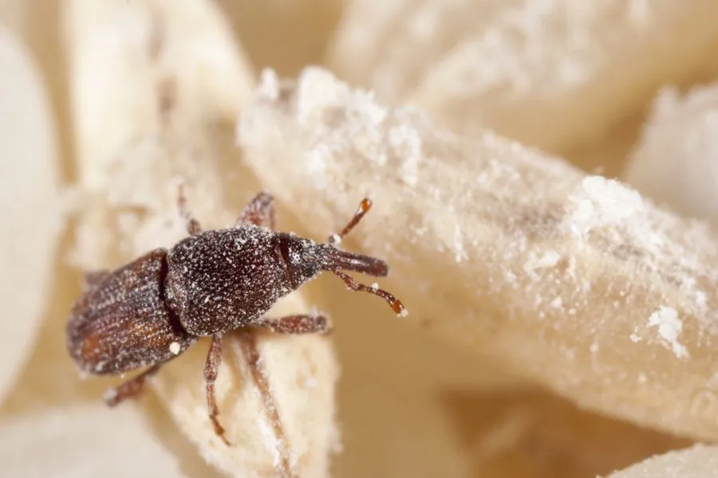

昆虫 · 动物界
米象 Sitophilus oryzae

储粮中常见的小型象甲，成虫头部有长喙，幼虫蛀食米粒，是家庭和粮库中常见的仓储害虫。
- 分类
- 门节肢动物门纲昆虫纲目鞘翅目科象甲科属米象属
- 栖息环境
- 米缸、粮仓、储粮容器和加工厂，蛀食粮粒
- 地理分布
- 全球分布，温暖潮湿地区尤为常见
- 保护级别
- 暂无评估；仓储害虫
物种志
米象成虫体长约 2.5–3.5 mm，体红褐至黑褐色，头部向前延伸成象鼻状的长喙，鞘翅上有纵向刻点和四个浅色斑，身体坚硬。幼虫乳白色，身体肥胖弯曲，没有足，躲在米粒内部取食。
它主要危害稻谷、大米、小麦、玉米等储粮，成虫和幼虫都在粮粒中取食和繁殖，雌虫用长喙在米粒上钻孔产卵，幼虫孵化后蛀食米粒内部，把米粒掏空。米象繁殖快，在温暖条件下一年可发生多代，是家庭米缸和粮库中最常见的害虫之一。防治以保持储粮干燥、密封储存、低温冷藏和定期检查为主，发现生虫的粮食可摊开晾晒或冷冻处理，严重时需整批处理。
形态与习性
- 食性成虫和幼虫取食稻谷、大米、小麦等储粮
- 体长成虫约 2.5–3.5 mm
- 识别头部有象鼻状长喙，鞘翅有四个浅色斑
- 生活史温暖条件下一年多代，幼虫蛀食米粒
- 防治保持干燥、密封储存、低温冷藏和定期检查
趣味知识
- 米象头部有一根象鼻一样的长喙，所以属于象甲科。
- 它的幼虫躲在米粒内部取食，把米粒掏空。
- 把粮食密封冷藏或摊开晾晒，能有效减少米象危害。